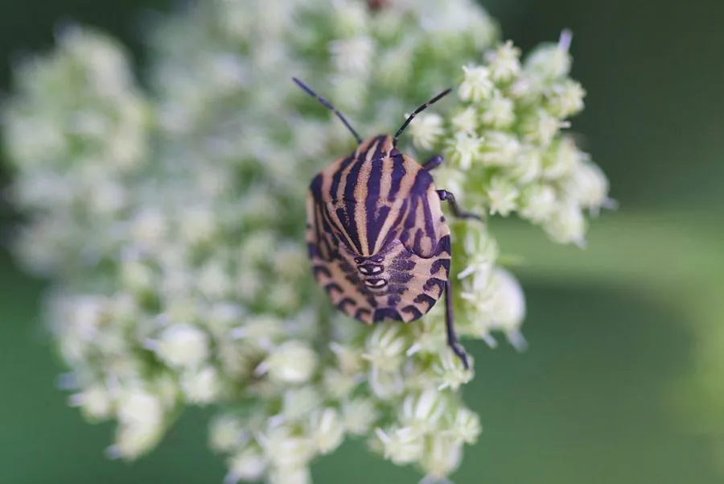

昆虫 · 动物界
赤条蝽 Graphosoma rubrolineatum

橙红底上有黑色纵条纹的盾形蝽，停歇时十分醒目，取食胡萝卜、芹菜等伞形科植物的花与嫩果，受惊时分泌臭液。
- 分类
- 门节肢动物门纲昆虫纲目半翅目科蝽科属赤条蝽属
- 栖息环境
- 伞形科植物生长的田野、菜地、路旁和草坡
- 地理分布
- 中国南北各地，以及朝鲜半岛、日本和俄罗斯远东
- 保护级别
- 尚无保护级别；为伞形科蔬菜与留种田的常见害虫
物种志
赤条蝽的体长约一至一点二厘米，体形宽盾形，背面橙红色至鲜红色，上面有数条粗大的黑色纵条纹，从头部一直延伸到小盾片末端，红黑对比鲜明，像穿了一件条纹衫，赤条蝽之名由此而来。它的头部小，触角细长，足黑色，腹部腹面橙黄。若虫体色较淡，条纹尚未完全显现。
它分布于中国南北各地，以及朝鲜半岛、日本和俄罗斯远东，栖息在胡萝卜、芹菜、茴香、防风等伞形科植物生长的田野、菜地、路旁和草坡，成虫和若虫都刺吸花蕾、嫩果和茎叶的汁液，造成花器发育不良和种子减产。它一年发生一至两代，以成虫在枯枝落叶或土缝中越冬，春季恢复活动。受惊时它从腹部臭腺分泌难闻的液体，鸟类因此不愿捕食。它尚无保护级别，是伞形科蔬菜和留种田的常见害虫。
形态与习性
- 体长约一至一点二厘米，宽盾形
- 体色橙红底上有粗大黑色纵条纹
- 寄主胡萝卜、芹菜、茴香、防风等伞形科植物
- 为害刺吸花蕾、嫩果和茎叶汁液
- 防御受惊时臭腺分泌难闻液体
- 发生世代一年一至两代，以成虫越冬
趣味知识
- 它背上的红黑条纹像画上去的，在绿草丛里一眼就能看到。
- 臭腺一开，那股味道能在手上留很久。
- 它专挑伞形科的花和嫩果下口，留种田最怕它。